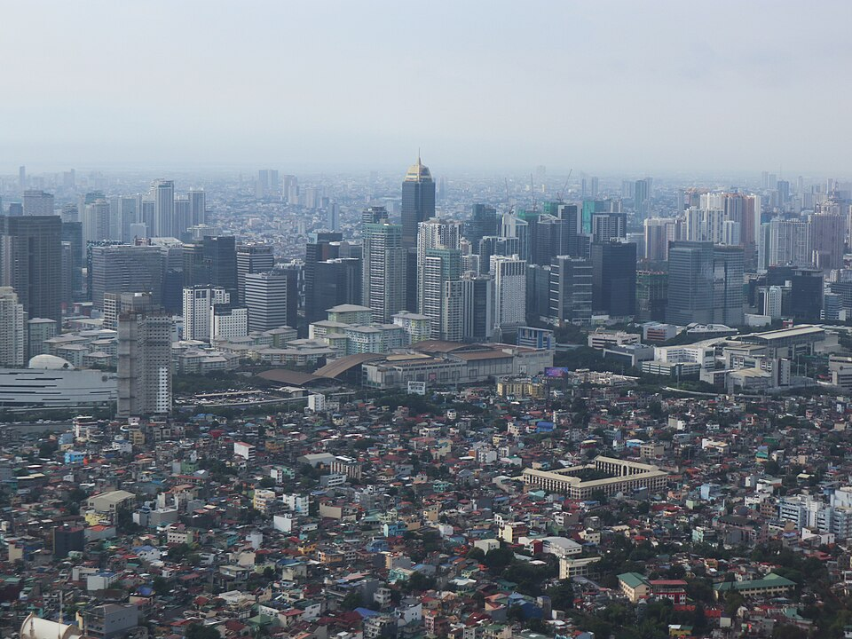

보니파시오 글로벌 시티(마닐라 타기그) 전경 · 사진: Patrickroque01 / Wikimedia Commons, CC BY-SA 4.0
인터내셔널 스쿨 마닐라(International School Manila) — 영어 쓰는 나라에서 생기는 착시
1. 인터내셔널 스쿨 마닐라는 어떤 학교인가
· 개교 — 1920년, 아메리칸 스쿨(American School)이라는 이름으로 문을 연 것으로 알려져 있습니다. 마닐라에서 가장 오래된 국제학교로 알려져 있습니다.
· 위치 — 2002년 타기그(Taguig)의 보니파시오 글로벌 시티(BGC)에 새로 지은 캠퍼스로 옮긴 것으로 알려져 있습니다. 주재원 주거지가 몰린 지역이라 통학 동선이 비교적 단순한 편으로 알려져 있습니다.
· 학년 — 유아 과정부터 G12까지로 알려져 있습니다.
· 교육과정 — 미국식 구조를 바탕으로 하고, 고등 과정에서 국제 바칼로레아 디플로마(IB DP)를 운영하는 것으로 알려져 있습니다.
· 인증 — 미국 서부지역학교연합(WASC) 인증을 받은 것으로 알려져 있습니다.
· 영어 지원 — 영어가 모국어가 아닌 학생을 위한 EAL 과정을 두고 있는 것으로 알려져 있습니다. → EAL(영어 지원 프로그램) 완전정리
· 구성 — 여러 국적의 학생이 함께 다니는 다국적 구성으로 알려져 있습니다.
※ 학비·정원·합격률·재학생 수 등 해마다 바뀌는 수치는 이 글에서 다루지 않습니다. 개설 과정과 입학 요건도 학교 방침에 따라 달라질 수 있으니 학교 요강을 직접 확인하세요.
2. 핵심 — "영어 쓰는 나라"라는 착시
필리핀 발령이 나면 다른 도시로 갈 때보다 마음이 가벼우십니다. 영어가 널리 쓰이는 환경이니까요. 실제로 아이들 말하기는 다른 도시보다 빨리 트입니다. 여기까지는 사실입니다. 문제는 그다음입니다.
학부모님이 "우리 아이 영어 늘었네" 하고 안심하시는 시점과, 학교에서 성적이 갈리기 시작하는 시점이 어긋납니다. 국제학교가 요구하는 영어는 세 겹인데, 필리핀 환경이 거저 주는 건 첫 번째 겹뿐이기 때문입니다.
| 겹 | 무엇인가 | 마닐라 생활로 느는가 |
|---|---|---|
| ① 생활 영어 | 친구·가게·일상 대화 | 예 — 빠르게 늡니다 |
| ② 학습 영어 | 교과서 읽기, 과목 어휘, 지시어 이해 | 아니오 — 따로 쌓아야 합니다 |
| ③ 평가 영어 | 에세이 구조, 근거와 분석, 서술형 답안 | 아니오 — 훈련해야 합니다 |
고등에서 IB 디플로마로 넘어가면 ②와 ③의 비중이 급격히 커집니다. IB는 정답이 아니라 논거를 채점하기 때문입니다. 말은 유창한데 에세이 점수가 안 나오는 아이의 대부분이 여기에 걸려 있습니다. → IB DP 점수 완전정복
3. 한국(주재원) 학생이 겪는 어려움
· 회화가 되니 문제가 늦게 발견된다. 다른 도시에서는 입학 첫 학기에 바로 드러나는 문제가, 마닐라에서는 G8~G9쯤 과목이 어려워질 때 뒤늦게 나타납니다. 그만큼 대응할 시간이 줄어듭니다.
· 미국식에서 IB로 넘어가는 전환이 있다. 저·중등은 미국식 구조로 가다가 고등에서 IB 디플로마를 만나면 채점 방식 자체가 달라집니다. 객관식 위주로 점수를 내던 습관이 통하지 않습니다.
· G10 말의 과목 선택. DP 6과목과 HL·SL, 특히 수학 AA와 AI는 되돌리기 어려운 선택입니다. 대학 전공에서 거꾸로 내려와야 합니다.
· EE·TOK·CAS가 따로 시간을 먹는다. 소논문(EE)·지식이론(TOK)·CAS는 과목 점수와 별개로 진행되는데, 미루면 반드시 G12에 몰립니다.
· 영어로 된 수학. 계산은 되는데 알지브라 용어가 영어이고, 서술형에서 풀이 과정을 영어 문장으로 적어야 단계 점수를 받습니다. → 알지브라 공부법
· 학년 배치. 한국 학년과 국제학교 학년은 그대로 맞아떨어지지 않습니다. 편입 상담 전에 한 번 확인해 두시는 편이 좋습니다. → 국제학교 학년 체계 총정리
4. 그래서 이렇게 준비합니다
📖 영어과외 — 회화 말고 "②·③번 겹"만
마닐라에 계신 가정에는 회화 수업을 권하지 않습니다. 그건 환경이 해 줍니다. 대신 교과서를 읽는 힘과 에세이 구조에 시간을 씁니다. 주장 → 근거 → 분석의 뼈대를 세우고, 특히 마지막 분석 문장(이 근거가 왜 내 주장을 뒷받침하는가)을 쓰는 훈련을 합니다. 과목별 지시어(analyze·evaluate·justify)가 각각 무엇을 요구하는지도 함께 정리합니다. (영어 공부법 참고)
📐 수학과외 — AA·AI 선택부터 거꾸로
알지브라·지오메트리 개념을 한국식 풀이와 영어 용어로 연결하고, 풀이를 영어 문장으로 적는 습관을 들입니다. 그 위에서 수학 AA(이론·증명 중심)와 AI(활용·자료 중심) 중 어느 쪽이 아이의 전공 방향에 맞는지를 G10 안에 정리해 둡니다.
🗓️ EE·TOK·CAS — G11에 나눠 놓기
EE 주제를 G11 상반기에 정해 두고, TOK 에세이는 수업에서 다룬 질문 중 마음에 드는 것을 메모해 두는 정도만으로도 G12가 훨씬 가벼워집니다.
🗺️ 편입 시기별 우선순위
· 유아~G5 편입 — 읽기 레벨과 수업 참여. 이 시기엔 환경이 많이 도와줍니다.
· G6~G8 편입 — 가장 중요한 구간입니다. 회화가 되니 괜찮아 보여도 학습 영어를 이때 쌓아야 고등이 편합니다.
· G9~G10 편입 — DP 6과목 조합과 수학 AA·AI를 함께 봅니다.
· G11 이후 편입 — 남은 기간, EE·TOK 일정, 대학 지원 일정을 먼저 표로 그리고 시작하세요. → 입학 준비 총정리
5. 마닐라의 강점 — 시차 1시간, 화상과외에 유리
필리핀은 한국보다 1시간 느립니다. 마닐라 오후 4시가 한국 오후 5시라, 방과 후 시간이 한국 강사진의 수업 시간과 거의 그대로 맞습니다. 유럽·중동 주재 가정이 겪는 시간대 문제가 없습니다.
마닐라에는 영어 회화 학원이 아주 많습니다. 하지만 IB 기준표 채점이나 영어로 된 수학 서술을 한국어로 짚어 줄 곳은 찾기 어렵습니다. 아이의 실제 과제와 채점표를 화면에 놓고 "어느 항목에서 깎였는지"부터 보는 방식이 가장 빠릅니다. 성적표를 어떻게 읽는지는 성적표(Report Card) 읽는 법에 정리해 두었습니다.
정리
인터내셔널 스쿨 마닐라는 1920년 아메리칸 스쿨로 문을 연 것으로 알려진 마닐라의 오래된 국제학교이고, 2002년 보니파시오 글로벌 시티 캠퍼스로 옮겨 미국식 구조 + 고등 IB 디플로마로 운영되는 것으로 알려져 있습니다. 필리핀 주재를 준비하실 때 기억하실 것은 하나입니다. 영어권이라는 이점은 "생활 영어"까지만 주어집니다. 성적을 만드는 학습 영어와 평가 영어는 다른 도시와 똑같이 따로 쌓아야 합니다. 오히려 아이가 말을 잘하니 문제를 늦게 발견하게 되는 것이 진짜 위험입니다. 30분 무료 상담으로 우리 아이가 어느 겹까지 와 있는지 함께 짚어 보세요.